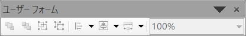
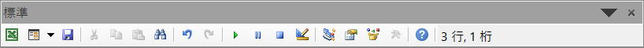
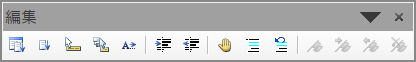

VBEの使い方：ツールバー
VBE(Visual Basic Editor)は、VBAで使われるコードエディタ、コンパイラ、デバッガ、その他の開発支援ツールが統合された開発環境です。
ここではツールバー（アイコン付きのボタン群）について説明します。
ツールバーの表示方法



通常は、メニューの下に配置すれば良いでしょう。
これらのツールバーを全て表示しておく必要はありません。
普段は、「標準」と「編集」を表示しておくのがお勧めです。
頻繁に使うものは、ショートカットを覚えると操作が速くなります。
デバッグ
| ボタン | 説明 |
| デザイン モード | デザイン モードのオンとオフを切り替えます。 |
| Sub/ユーザー フォームの実行、マクロの実行 | カーソルがプロシージャ内にある場合は現在のプロシージャを実行します。 ユーザー フォームが現在アクティブである場合は、そのユーザー フォームを実行します。 コード ウィンドウもユーザー フォームもアクティブでない場合は、マクロを実行します。 |
| 中断 | プログラムの実行中にその実行を停止し、ブレーク モードに切り替えます。 |
| リセット | 実行スタックとモジュール レベルの変数をクリアし、プロジェクトをリセットします。 |
| ブレークポイントの設定/解除 | 現在の行のブレークポイントの設定または解除を行います。 |
| ステップ イン | コードで一度に 1 つのステートメントを実行します。 |
| ステップ オーバー | コード ウィンドウで、一度に 1 つのプロシージャまたはステートメントを実行します。 |
| ステップ アウト | 現在の実行ポイントが存在するプロシージャの残りの行を実行します。 |
| ローカル ウィンドウ | [ローカル] ウィンドウを表示します。 |
| イミディエイト ウィンドウ | [イミディエイト] ウィンドウを表示します。 |
| ウォッチ ウィンドウ | [ウォッチ] ウィンドウを表示します。 |
| クイック ウォッチ | [クイック ウォッチ] ダイアログ ボックスを、選択された式の現在の値と共に表示します。 |
| 呼び出し履歴 | [呼び出し履歴] ダイアログ ボックスを表示します。 現在アクティブなプロシージャ呼び出し (開始したが完了していないアプリケーション内のプロシージャ) が一覧表示されます。 |
ユーザーフォーム
| ボタン | 説明 |
| 最前面へ移動 | 選択されたオブジェクトを、フォーム上にある他のすべてのオブジェクトの前面に移動します。 |
| 最背面へ移動 | 選択されたオブジェクトを、フォーム上にある他のすべてのオブジェクトの背面に移動します。 |
| グループ化 | 選択されたオブジェクトのグループを作成します。 |
| グループ化解除 | 以前にグループ化されたオブジェクトのグループ化を解除します。 |
| 配置 | 左: 選択されたオブジェクトの水平位置を整列し、左端に揃えます。 中央: 選択されたオブジェクトの水平位置を整列し、左右中央に揃えます。 右: 選択されたオブジェクトの水平位置を整列し、右端に揃えます。 上: 選択されたオブジェクトの垂直位置を整列し、上端に揃えます。 中央: 選択されたオブジェクトの垂直位置を整列し、上下中央に揃えます。 下: 選択されたオブジェクトの垂直位置を整列し、下端に揃えます。 グリッドに合わせる: 選択されたオブジェクトの左上を、最も近いグリッドに揃えます。 |
| 中央揃え | 左右: 選択されたオブジェクトの水平方向の中央を揃えます。 上下: 選択されたオブジェクトの垂直方向の中央を揃えます。 |
| 同じサイズに揃える | 幅: 幅を調整します。 高さ: 高さを調整します。 両方: 幅と高さの両方を調整します。 |
| ズーム | ユーザー フォーム上のすべてのコントロールの表示を縮小または拡大します。10% から 400% の任意の倍率を設定できます。 |
標準
| ボタン | 説明 |
| <host application>の表示 | ホスト アプリケーションとアクティブな Visual Basic ドキュメントを切り替えます。 |
| 挿入 | メニューを開き、次のオブジェクトのいずれかをアクティブなプロジェクトに挿入できるようにします。 アイコンは、追加した最後のオブジェクトに変わります。 既定値はフォームです。 ・ユーザー フォーム ・モジュール ・クラス モジュール ・プロシージャ |
| 上書き保存 | プロジェクトとそのすべてのコンポーネント (フォームとモジュール) を含む、ホスト ドキュメントを保存します。 |
| 切り取り | 選択されたコントロールまたはテキストを削除し、[クリップボード] に配置します。 |
| コピー | 選択されたコントロールまたはテキストを [クリップボード] にコピーします。 |
| 貼り付け | クリップボードの内容を、現在の場所に挿入します。 |
| 検索 | [検索] ダイアログ ボックスを開き、[検索する文字列] ボックスで指定されたテキストを検索します。 |
| 元に戻す | 直前の編集操作を元に戻します。 |
| やり直し | 直前の元に戻す操作以降に他の操作が行われていない場合は、直前のテキスト編集の元に戻す操作を復元します。 |
| Sub/ユーザー フォームの実行またはマクロの実行 | カーソルがプロシージャ内にある場合は現在のプロシージャを実行します。 ユーザー フォームが現在アクティブである場合は、そのユーザー フォームを実行します。 コード ウィンドウもユーザー フォームもアクティブでない場合は、マクロを実行します。 |
| 中断 | プログラムの実行中にその実行を停止し、ブレーク モードに切り替えます。 |
| リセット | 実行スタック モジュール レベルの変数をクリアし、プロジェクトをリセットします。 |
| デザイン モード | デザイン モードのオンとオフを切り替えます。 |
| プロジェクト エクスプローラー | プロジェクト エクスプローラーを表示します。 ここには、現在開かれているプロジェクトとその内容の階層リストが表示されます。 |
| プロパティ ウィンドウ | プロパティ ウィンドウを開き、選択されたコントロールのプロパティを表示できるようにします。 |
| オブジェクト ブラウザー | オブジェクト ライブラリ、タイプ ライブラリ、クラス、メソッド、プロパティ、イベント、コード内で使用できる定数、およびプロジェクトに定義したモジュールおよびプロシージャをリストするオブジェクト ブラウザーを表示します。 |
| ツールボックス | アプリケーションで使用できる挿入可能なオブジェクト(Microsoft Excel グラフなど) とコントロールをすべて含む、[ツールボックス] を表示または非表示にします。 これを使用できるのは、ユーザー フォームがアクティブな場合のみです。 |
| Microsoft Visual Basic for Applications ヘルプ | 関連するアプリケーシ |
編集
| ボタン | 説明 |
| プロパティ/メソッドの一覧 | ピリオド (.) の前にあるオブジェクトで使用できるプロパティとメソッドを含むコード ウィンドウにボックスが開きます。 |
| 定数の一覧 | 等号 (=) の前にある、入力したプロパティに対して有効な選択肢である定数を含むコード ウィンドウにボックスが開きます。 |
| クイック ヒント | 関数、メソッド、またはプロシージャ名の中のポインター位置に基づいて、変数、関数、メソッド、またはプロシージャの構文を表示します。 |
| パラメーター ヒント | ポインターが置かれた関数のパラメーターに関する情報を含むコード ウィンドウでポップアップを表示します。 |
| 入力候補 | 入力している単語に Visual Basic によって自動的に追加される文字を受け入れます。 |
| インデント | 選択範囲内のすべての行を次のタブ位置にシフトします。 |
| インデントを戻す | 選択範囲内のすべての行を前のタブ位置にシフトします。 |
| ブレークポイントの設定/解除 | 現在の行のブレークポイントの設定または解除を行います。 |
| コメント ブロック | 選択されたテキスト ブロックの各行の先頭にコメント文字を追加します。 |
| 非コメント ブロック | 選択されているテキスト ブロックの各行からコメント文字を削除します。 |
| ブックマークの設定/解除 | コード ウィンドウのアクティブ行に対して、ブックマークの設定または解除を行います。 |
| 次のブックマーク | ブックマーク スタック内の次のブックマークにフォーカスを移動します。 |
| 前のブックマーク | ブックマーク スタック内の前のブックマークにフォーカスを移動します。 |
| すべてのブックマークの解除 | すべてのブックマークを削除します。 |
ユーザー設定
操作方法はいろいろありますが、ドラッグ＆ドロップが簡単で良いでしょう。
コマンドタブの分類を選択しすると、そこに含まれるコマンド（アイコン）が表示されます。
このアイコンを、既にあるツールバーにドラッグ＆ドロップできます。
ツールバーの最後に
頻繁に使う機能は、まずはショートカットキーを覚えると良いでしょう。
しかし、ショートカットキーが割り当てられていないものもありますので、ツールバーは必須になってきます。
また一度配置すると、アイコンを見て判断するというより、その場所で覚えてしまうものです。
自身で使いやすい場所を考えて配置して下さい。
同じテーマ「マクロVBA入門」の記事
VBEの使い方：VBE画面の全体説明
VBEの使い方：ツールのオプション設定
VBEの使い方：ツールバー
VBEの使い方：右クリックメニューとヘルプ
VBEの使い方：ショートカットキーとコード編集
VBEの使い方：イミディエイト ウィンドウ
VBEの使い方：ローカル ウィンドウ
VBEの使い方：ウォッチ ウィンドウ
VBEの使い方：オブジェクト ブラウザー
VBEの使い方：デバッグ
新着記事NEW ・・・新着記事一覧を見る
VBA100本ノック 100本目：WEBから100本ノックのリストを取得｜VBA練習問題（3月3日）
VBA100本ノック 99本目：自動席替え（行列と前後左右が全て違うように）｜VBA練習問題（3月2日）
VBA100本ノック 98本目：席替えルールが守られているか確認｜VBA練習問題（3月1日）
VBA100本ノック 97本目：Accessデータを取得（グループ集計）｜VBA練習問題（2月27日）
VBA100本ノック 96本目：Accessデータを取得（マスタ結合&抽出）｜VBA練習問題（2月26日）
VBA100本ノック 95本目：図形のテキストを検索するフォーム作成｜VBA練習問題（2月24日）
VBA100本ノック 94本目：表範囲からHTMLのtableタグを作成｜VBA練習問題（2月23日）
VBA100本ノック 93本目：複数ブックを連結して再分割｜VBA練習問題（2月22日）
VBA100本ノック 92本目：セルの色を16進で返す関数｜VBA練習問題（2月20日）
VBA100本ノック 91本目：時間計算（残業時間の月間合計）｜VBA練習問題（2月19日）
アクセスランキング ・・・ ランキング一覧を見る
1.最終行の取得（End,Rows.Count）｜VBA入門
2.RangeとCellsの使い方｜VBA入門
3.変数宣言のDimとデータ型｜VBA入門
4.マクロって何？VBAって何？｜VBA入門
5.Range以外の指定方法（Cells,Rows,Columns）｜VBA入門
6.セルのコピー&値の貼り付け（PasteSpecial）｜VBA入門
7.繰り返し処理（For Next)｜VBA入門
8.セルに文字を入れるとは（Range,Value）｜VBA入門
9.マクロはどこに書くの（VBEの起動）｜VBA入門
10.とにかく書いてみよう（Sub,End Sub）｜VBA入門
このサイトがお役に立ちましたら「シェア」「Bookmark」をお願いいたします。
記述には細心の注意をしたつもりですが、
間違いやご指摘がありましたら、「お問い合わせ」からお知らせいただけると幸いです。
掲載のVBAコードは動作を保証するものではなく、あくまでVBA学習のサンプルとして掲載しています。
掲載のVBAコードは自己責任でご使用ください。万一データ破損等の損害が発生しても責任は負いません。